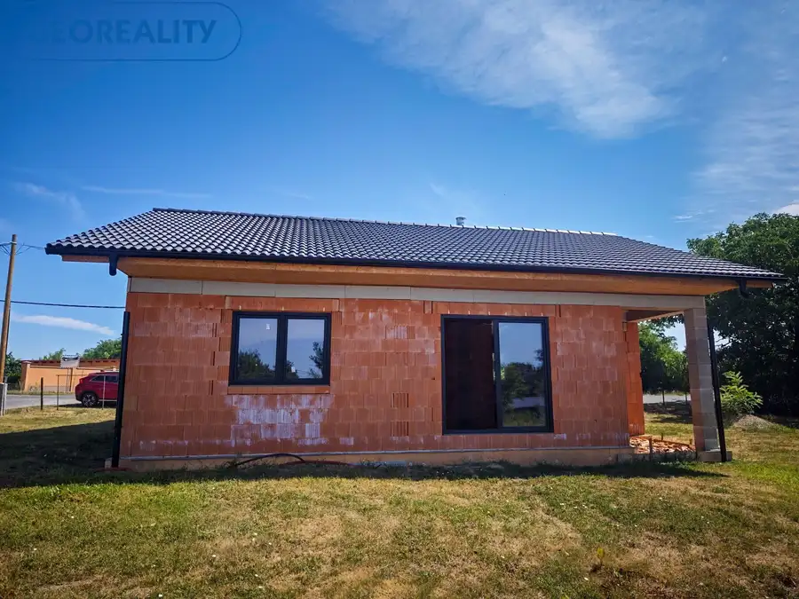
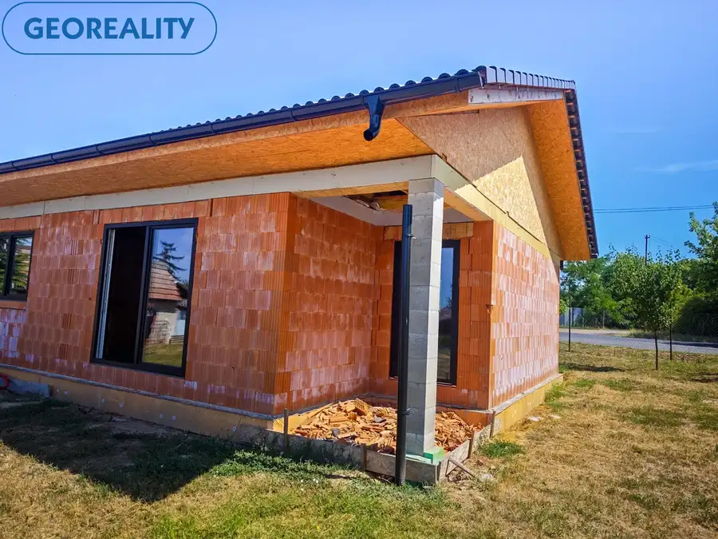
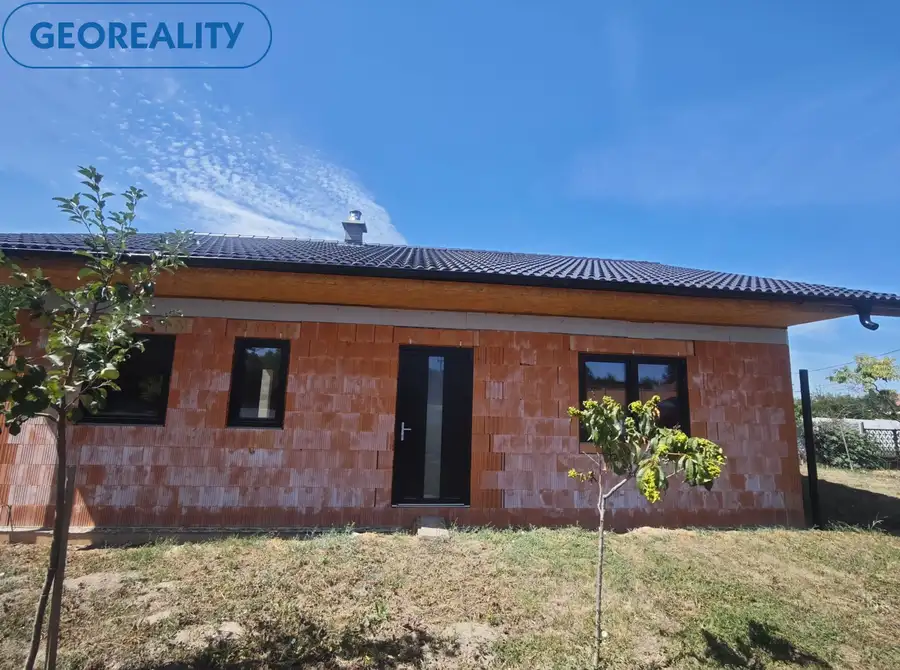
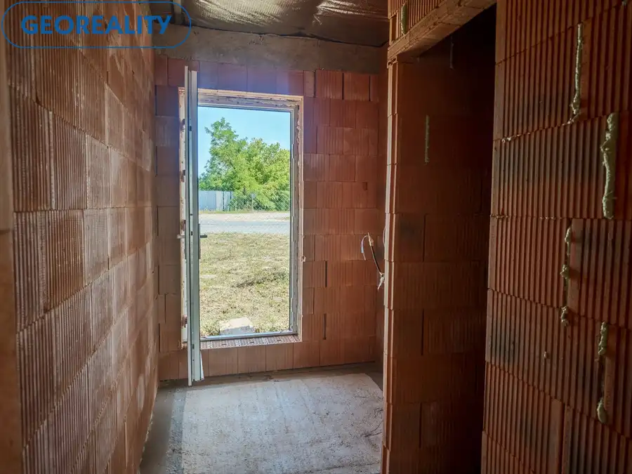

EXKLUZÍVNE | Rozostavaný rodinný dom v obci Zbrojníky – dokončite si bývanie podľa vlastných predstáv
Zbrojníky





- Plocha80 m²
- StavVo výstavbe
O nehnuteľnosti
Hľadáte miesto, kde si vytvoríte domov presne podľa svojich snov? Máme pre vás jedinečnú príležitosť! Exkluzívne iba u nás ponúkame na predaj rozostavaný rodinný dom v obľúbenej obci Zbrojníky, ktorý ponúka ideálny základ pre moderné a komfortné bývanie.Dom sa nachádza na rovinatom pozemku s výmerou 990 m² v pokojnej časti obce. Je v štádiu uzatvorenej hrubej stavby – osadené sú kvalitné plastové okná a vstupné dvere, dokončená je strecha, takže nový majiteľ môže pokračovať v realizácii interiéru podľa vlastného vkusu a potrieb.Technické parametrezastavaná plocha domu: 100 m²úžitková plocha domu: 80m2murovaná stavba z kvalitnej 30 cm tehlystrecha s kvalitnou škridlou Bramaczateplenie strechy 40 cm minerálnou vatou s parozábranoukvalitné plastové okná s trojsklompríprava na krbvlastná studňa na pozemkupríprava na kanalizáciuelektrina a plyn pri pozemku (cca do 30 m)na pozemku sa nachádza nová klenbová pivnica, ktorá dodáva nehnuteľnosti jedinečný charakterDispozícia domuDom je navrhnutý s dôrazom na praktické rodinné bývanie.vstupná chodbasamostatné WCdve priestranné spálneveľká kúpeľňasvetlá obývacia izba prepojená s kuchyňou a jedálňoutechnická miestnosťšpajza s priestorom na chladničkudva samostatné výstupy na budúcu terasu – z obývacej izby aj z kuchyneVeľké presklené dvere zabezpečia dostatok denného svetla a prirodzené prepojenie interiéru so záhradou.Lokalita – ZbrojníkyObec Zbrojníky je ideálnym miestom pre tých, ktorí túžia po pokojnom bývaní mimo mestského ruchu, no zároveň chcú mať dobrú dostupnosť do okolitých miest. Ponúka príjemné vidiecke prostredie, krásnu prírodu a pokojné bývanie, ktoré ocenia najmä rodiny s deťmi aj ľudia hľadajúci oddych po pracovnom dni. Veľkorysý pozemok poskytuje dostatok priestoru na záhradu, bazén, altánok či ďalšie úpravy podľa vlastných predstáv.Ak hľadáte nehnuteľnosť, ktorú si môžete dokončiť presne podľa svojho štýlu a vytvoriť si vysnívaný domov v pokojnom prostredí, táto ponuka je pre vás tou správnou voľbou.Pri vážnom záujme a rýchlom jednaní je dohoda na cene možná.Naše ceny sú vrátane provízie za kompletný servis a sú schválené majiteľom!Neváhajte nás kontaktovať a dohodnite si obhliadku. Možno práve tu nájdete svoj nový domov.Prevedieme Vás celým priebehom obchodu až po samotné odovzdanie nehnuteľnosti.Ak vás moja ponuka zaujala, neváhajte ma kontaktovať, dohodneme si obhliadku na ktorej vám nehnuteľnosť rád ukážem. Využite naše služby a pridajte sa do veľkej skupiny našich spokojných klientov. Tiež vás pozývame na IG georealitylv, na našu FB stránku: Georeality Levice - realitná kancelária, kde môžete pozorne sledovať našu každodennú prácu a tiež na: www.georealitylv.skMaklér: Marek Šuchal, email suchal@georealitylv.sk, tel. 0915 716 950
Parametre
- Druh
- Rodinný dom
- Dátum zverejnenia
- 22. 07. 2026
- Energetický certifikát budovy
- nie je
- Plocha pozemku
- 990 m²
- Počet nadzemných podlaží
- 1
- Počet pivníc
- 1
- Rok výstavby
- 2025
- Stav nehnuteľnosti
- Vo výstavbe
- Terás
- 1
- Terén pozemku
- Rovinatý
- Typ
- Predaj
- Typ konštrukcie
- Tehlová
- Vybavenie
- Pivnica, Terasa
- Vybavenie objektu
- Holopriestor
- Zastavaná plocha
- 108 m²
- Úžitková plocha
- 80 m²